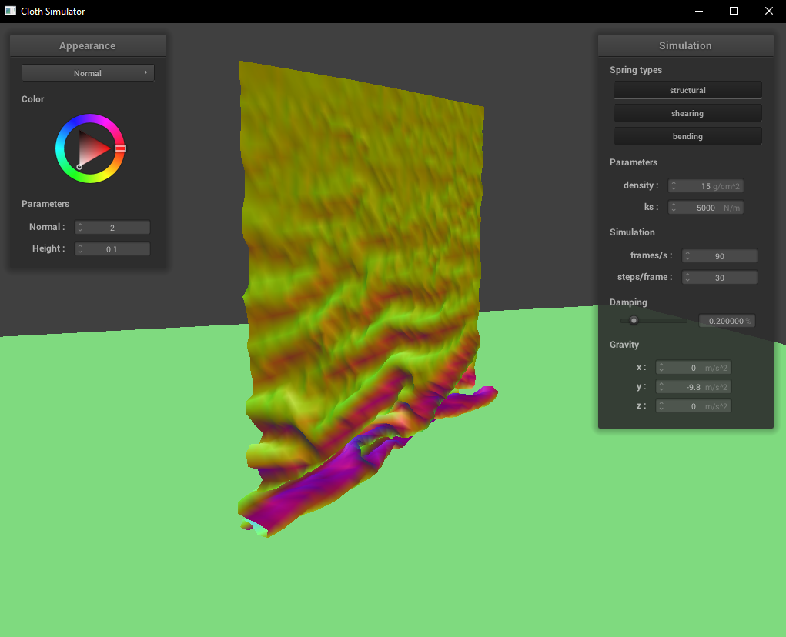

CS 184: Computer Graphics and Imaging, Spring 2023
Project 4: Cloth Simulator
Miles Turin, CS184-sp23
Hosted at https://milesturin.github.io/proj-webpage-template/proj4/index.html
Overview
In this project I implemented a robust cloth simulation as well as several GLSL shaders. The simulation accounts for a variety of real world physical phenomenon as well as a number of issues that can arise in this type of simulation. The GLSL shaders implement several different shading methods and well as texturing, bump maps, and displacement.
Part 1: Masses and springs
Take some screenshots of scene/pinned2.json from a viewing angle where you can clearly see the cloth wireframe
to show the structure of your point masses and springs.
Show us what the wireframe looks like (1) without any shearing constraints,
(2) with only shearing constraints, and (3) with all constraints.
|
No shearing constraints
|
|
Only shearing constraints
|
|
All constraints
|
Part 2: Simulation via numerical integration
Experiment with some the parameters in the simulation.
To do so, pause the simulation at the start with P, modify the values of interest, and then resume by pressing P again.
You can also restart the simulation at any time from the cloth's starting position by pressing R.
Describe the effects of changing the spring constant ks; how does the cloth behave from start to rest with a very low ks?
A high ks?
With a very low Ks it falls slowly and we a deep fold in the middle with only only subtle folds on the side.
With a very high Ks it falls at the normal speed but only gets a single center fold and no side folds.
What about for density?
With very low density, the cloth falls very slowly. After resting, it's missing several folds similar to the high Ks case.
With very high density, the cloth falls very quickly. After resting, it has a very large and pronounced fold between the pinned points similar to the low Ks case.
|
Very low density
|
Very high density
|
|
What about for damping?
With a very low damping, the cloth falls quickly and has a strange "shimmering" effect as it falls down; the surface of the cloth ripples rapidly. The cloth swings back and forth several times before resting.
With a high damping, the cloth falls very slowly, but otherwise acts like it does with default parameters (No screenshot is provided since it looks identical to the default case).
For each of the above, observe any noticeable differences in the cloth compared to the default parameters
and show us some screenshots of those interesting differences and describe when they occur.
Show us a screenshot of your shaded cloth from scene/pinned4.json in its final resting state!
If you choose to use different parameters than the default ones, please list them.
Part 3: Handling collisions with other objects
Show us screenshots of your shaded cloth from scene/sphere.json in its final resting state
on the sphere using the default ks = 5000 as well as with ks = 500 and ks = 50000.
|
$\text{ks} = 500$
|
Initial configuration ($\text{ks} = 5000$)
|
$\text{ks} = 50000$
|
|
Describe the differences in the results.
With Ks=5000, our cloth falls as one would expect. With Ks=500, the cloth drapes much lower and we see more folds in it. With Ks=50000 the cloth drapes around the same length as in the normal case but there are far fewer folds and the surface appears stiffer.
Show us a screenshot of your shaded cloth lying peacefully at rest on the plane.
If you haven't by now, feel free to express your colorful creativity with the cloth!
(You will need to complete the shaders portion first to show custom colors.)
Part 4: Handling self-collisions
Show us at least 3 screenshots that document how your cloth falls and folds on itself,
starting with an early, initial self-collision
and ending with the cloth at a more restful state (even if it is still slightly bouncy on the ground).
|

Self collision 1
|
Self collision 2
|
|
Self collision 3
|
Self collision 4
|
Vary the density as well as ks
and describe with words and screenshots how they affect the behavior of the cloth as it falls on itself.
|
$\text{density} = 1$
|
$\text{density} = 50$
|
|
$\text{ks} = 1000$
|
$\text{ks} = 25000$
|
With density=1 the cloth bunched up on itself much less and overall fell much stiffer.
With density=50 the cloth bunched up a lot and fell in a very malleable manner.
With Ks=1000 the cloth bunched up even more than with density 50.
With Ks=25000 the cloth fell fairly stiffly, similar to with density=1.
Part 5: Cloth Sim
Explain in your own words what is a shader program and how vertex and fragment shaders work together to create lighting and material effects.
Shaders are GPU programs that take in vector inputs and give a vector output. Vertex shaders are shaders that modify vertices, usually of meshes. An example use would be warping the vertices of the leaves of a tree model to simulate wind blowing through them. Fragment shaders modify the data sampled to get pixel values. An example use of a fragment shader would be altering each pixel's color values to get a greyscale image. Vertex and fragment shaders can be used in conjunction to create realistic lighting and material effects: The vertex shader passes on information such as vertex normals and tangents to the fragment shader that can be used to calculate lighting. Vertices can also be directly modified to create material effects such as displacement maps. Fragment shaders are perfect for calculating lighting on a per-pixel basis, such as we did with Blinn-Phong shading.
Explain the Blinn-Phong shading model in your own words.
Show a screenshot of your Blinn-Phong shader outputting only the ambient component, a screen shot only outputting the diffuse component, a screen shot only outputting the specular component, and one using the entire Blinn-Phong model.
The Blinn-Phong shading model is a way of calculaing the lighting on each pixel of a surface given some light sources. There are three main components of the equation: the ambient component, the diffuse component, and the specular component. The ambient component simply adds in the ambient light present in the scene, taking into account the ambient coefficient of the material. The diffuse component uses Lambert's cosine law along with the inverse square law to calculate the intensity of diffusely scattered light at that pixel. Finally, the specular component does the same calcuation as the diffuse component, except that it examines the angle between the viewer and the halfway vector to get a more accurate representation of how light is reflected by specular surfaces. Adding all of the components together, we get an efficient and realistic lighting model.
|
Ambient component only
|
Diffuse component only
|
|
Specular component only
|
Complete Blinn-Phong model
|
Show a screenshot of your texture mapping shader using your own custom texture by modifying the textures in /textures/.
Show a screenshot of bump mapping on the cloth and on the sphere.
Show a screenshot of displacement mapping on the sphere.
Use the same texture for both renders.
You can either provide your own texture or use one of the ones in the textures directory,
BUT choose one that's not the default texture_2.png.
Compare the two approaches and resulting renders in your own words.
Compare how your the two shaders react to the sphere by changing the sphere mesh's coarseness by using -o 16 -a 16 and then -o 128 -a 128.
|
Bump Mapping on the Cloth
|
 Bump Mapping on the Sphere
Bump Mapping on the Sphere
|
|
|
Displacement Mapping on the Sphere
|
|
Displacement Mapping on the Sphere (coarser mesh)
|
Displacement Mapping on the Sphere (finer mesh)
|
With bump mapping we're modifying the surface normals based off of a texture. While the geometry of the mesh is not changed at all, it creates the illusion that it has been. With displacement mapping, we combine bumpmapping with actual displacement of vertices. While displacement mapping can be more convincing in many cases, it does not work well with the texture and parameters I selected and ends up being far too drastic.
While the coarseness of the sphere mesh does not appear to affect bumpmapping, it has a large bearing on how well displacement works. This makes perfect sense: with more vertices, we have more control over the shape of the surface.
Show a screenshot of your mirror shader on the cloth and on the sphere.
|
Mirror Shader on the Cloth
|
Mirror Shader on the Sphere
|
|
Explain what you did in your custom shader, if you made one.
I created a version of the mirror texture that is checkered, with a modified version reflected in the half of the squares.
Extra Credit (optional)
If you implemented any additional technical features for the cloth simulation,
clearly describe what you did and provide screenshots that illustrate your work.
If it is an improvement compared to something already existing on the cloth simulation,
compare and contrast them both in words and in images.
I created the custom shader above.